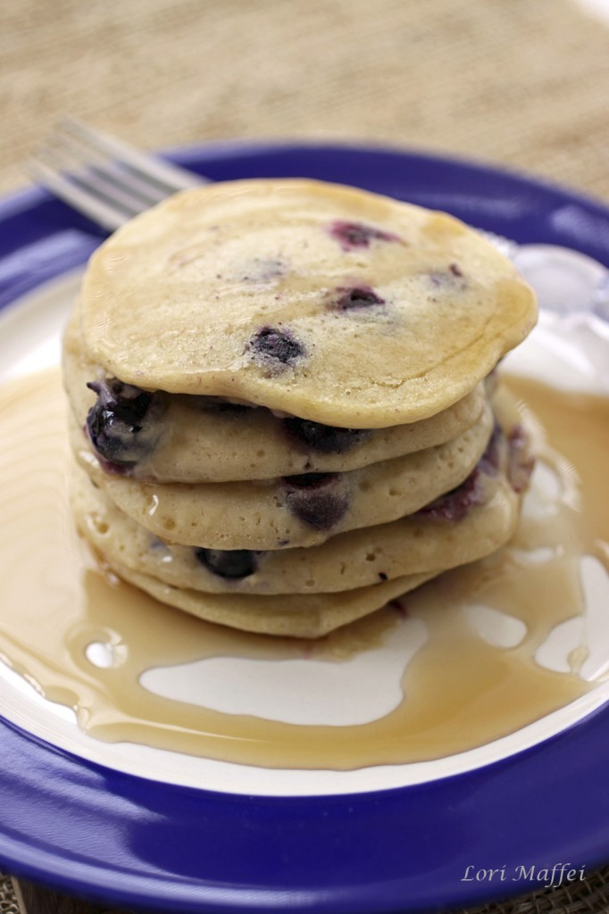

Pancakes

Description
When my hubby comes home from a long day of working at the farm i like to see the look on his face as he masticates these LUSCIOUS blueberry pancakes!!!!
All I have to do is pull out the ingredients, and immediately my brain is soaked in endorphins. Cooking is love. It just is.
Ingredients
- 1 1/2 cups unbleached all-purpose flour
- 3 tablespoons natural sugar
- 2 teaspoons baking powder
- etc.
Steps
- In a large bowl, combine the flour, sugar, baking powder, and salt and set aside.
- In a blender, combine the flaxseeds and water and blend until viscous. Add the nondairy milk and vanilla and blend until smooth.
- etc.
Return to main page